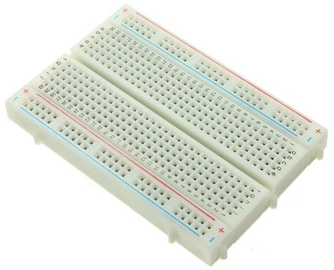

Nuestro proyecto se basa en una alarma anti robo que detecta los movimientos nada más pasar por delante.
Esto se hará con arduino y este arduino estará escondido dentro de una caja y que solo sobresalga el sensor ultrasónico para poder detectar los movimientos.

Planificación del proyecto
Una vez tengamos los materiales necesarios para empezar el proyecto , una vez esté montado comenzaremos a programar la placa de arduino y a partir de ahí comenzaremos a probar retocando algunas cosas hasta que funcione y quede bien.
Tecnologías empleadas
Las tecnologías que hemos escogido básicamente han sido el programa arduino y dentro del programa hemos hecho el mejor código que hemos podido para que pueda detectar lejanamente a x cosa. Además se puede configurar para que la alarma esté todo el tiempo que quiera pitando.
Hemos comprado por amazon un kit de arduino el cual nos ha costado 30€ pero posteriormente hemos tenido que comprar unos cables dupont macho-macho que nos ha costado 3 €, con lo que en total han sido 33€